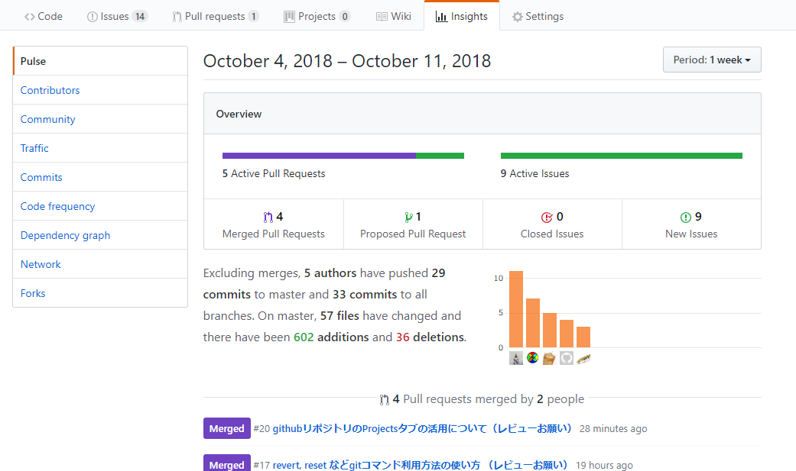
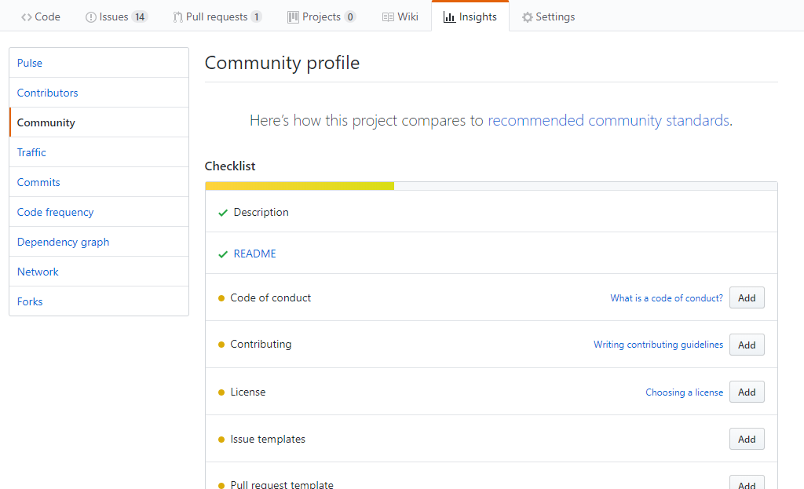
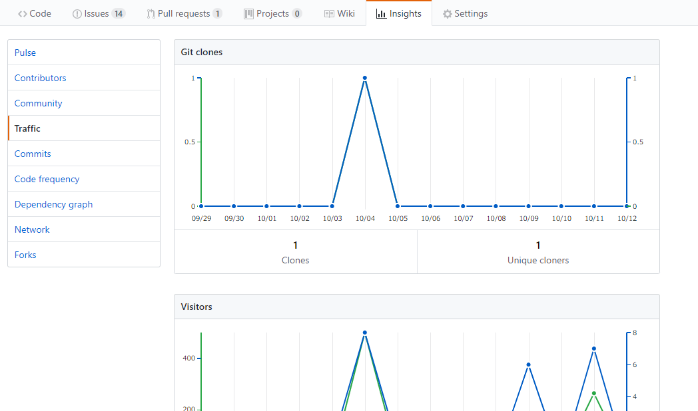
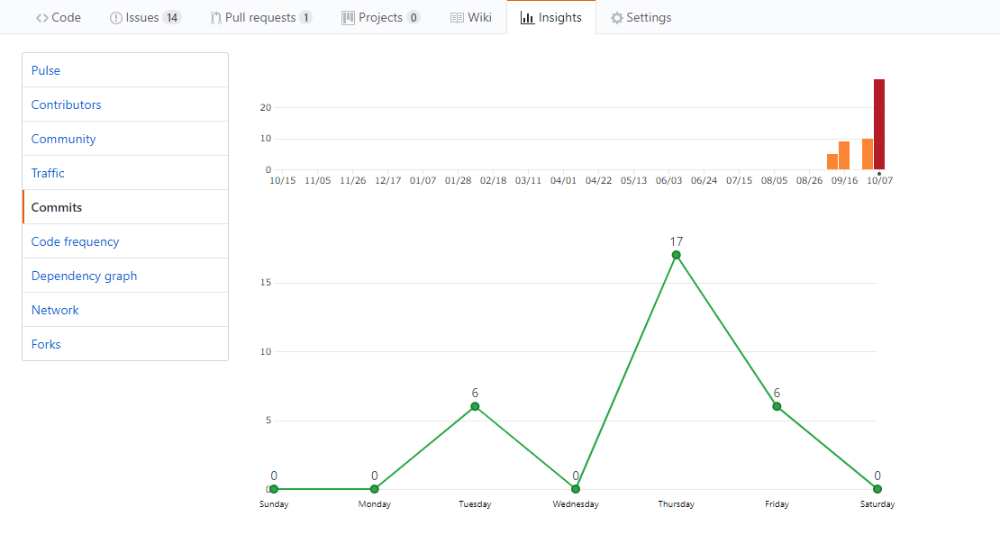
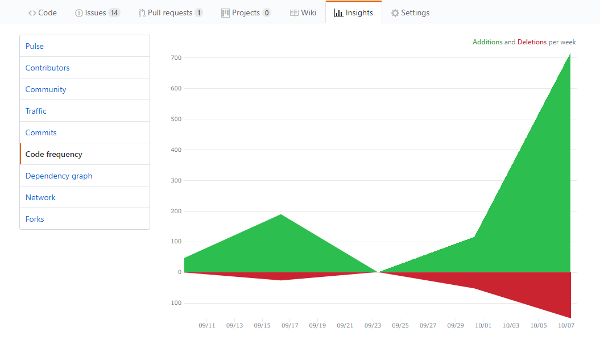
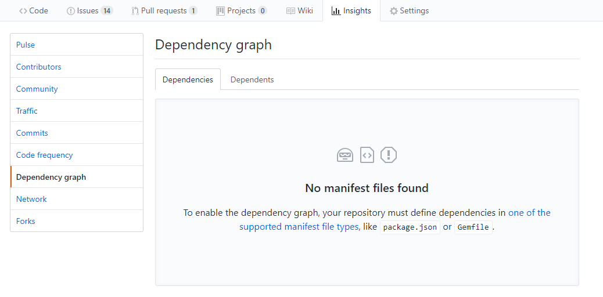
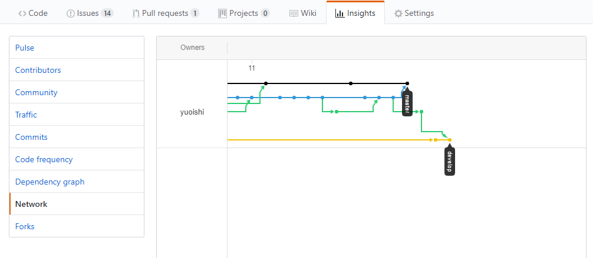
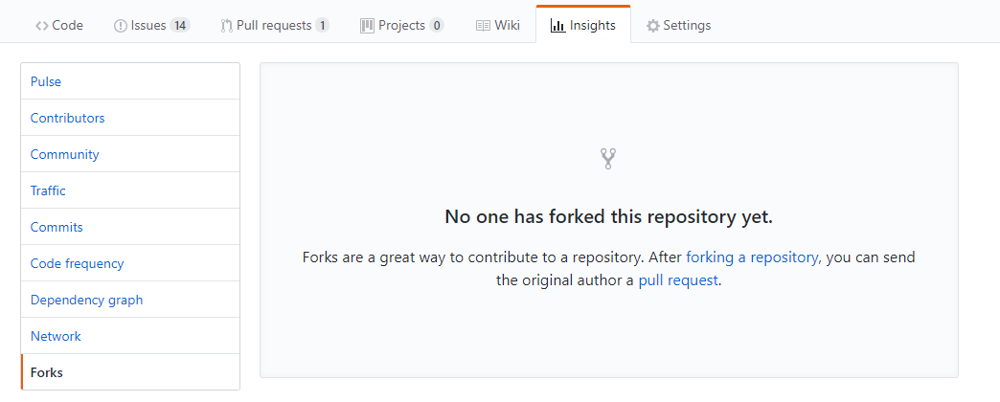

Insightsタブを開くと様々なものを確認ができる。
これらを列挙していく。
Pulse
Overviewでマージされたプルリクエストやマージ待ちプルリクエスト、イシューの数などが確認できる。
Contributors
開発メンバーのコミット数のグラフを確認できる。
Community
イシューのテンプレートやプルリクエストのテンプレートなどを作成できる。
Traffic
Git clone数やVisitors、views数を確認できる。
Commits
コミット数のグラフ、曜日別などで確認できる。
Code frequency
Additions,Deletions具合を確認できる。
Dependency graph
リポジトリが依存しているライブラリなどを可視化するもの。
Network
gitのログが枝分かれなどが図式化されているので分かりやすい。
Forks
forkが無いと表示されるものがない。
